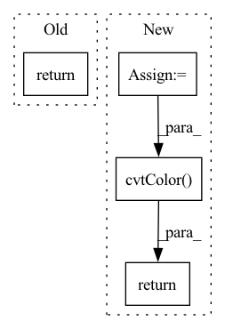

Pattern ID :23862

Before Change
rgb = cm.hsv(angles_normalized)[:, :-1] // hsv is cyclic
magnitude = np.sqrt(np.sum(flows**2, axis=1))
magnitude /= magnitude.max()
return rgb * magnitude[:, np.newaxis]
def update_scan(self):
After Change
// https://stackoverflow.com/questions/28898346/visualize-optical-flow-with-color-model
// Use Hue, Saturation, Value colour model
hsv = np.zeros((flows.shape[0], 1, 3), dtype=np.uint8)
hsv[..., 1] = 255
mag, ang = cv2.cartToPolar(flows[..., 0], flows[..., 1])
hsv[..., 0] = ang * 180 / np.pi / 2
hsv[..., 2] = cv2.normalize(mag, None, 0, 255, cv2.NORM_MINMAX)
rgb = cv2.cvtColor(hsv, cv2.COLOR_HSV2RGB)
rgb = rgb[:, 0, :] / 255. // Normalize to 1
rgb[rgb < 0.2] = 0.2 // Just for visualize not moving points
return rgb
def update_scan(self):
// first open data
In pattern: SUPERPATTERN
Frequency: 3
Non-data size: 4
Instances
Fragment ID: 74351535
Project Name: jabb0/fastflow3d
Commit Name: ef8013b20d8d6b8f7090a5d6ba114bc64617682c
Time: 2021-07-07
Author: carlosmn1997@gmail.com
File Name: visualization/laserscanvis.py
M Class Name: LaserScanVis
N Class Name: LaserScanVis
M Method Name: flow_to_rgb(2)
N Method Name: flow_to_rgb(2)
M Parent Class:
N Parent Class:
M File Name: visualization/laserscanvis.py
N File Name: visualization/laserscanvis.py
M Start Line: 86
M End Line: 92
N Start Line: 82
N End Line: 93
'>
Before Change
def default_loader(path):
return Image.open(path).convert("RGB")
def disparity_loader(path):
After Change
def default_loader(path):
pil_image = Image.open(path).convert("RGB")
return cv2.cvtColor(np.array(pil_image), cv2.COLOR_RGB2BGR)
def disparity_loader(path):
return np.load(path).astype(np.float32)
'>
Fragment ID: 74351545
Project Name: amrelsersy/stereo-3d-detection
Commit Name: 416e434169c43549a15bc5c93b564b860fd46d42
Time: 2021-05-27
Author: mamoanwar97@gmail.com
File Name: Models/AnyNet/dataloader/KITTILoader3D.py
M Class Name: AnonimousClass
N Class Name: AnonimousClass
M Method Name: default_loader(1)
N Method Name: default_loader(1)
M Parent Class:
N Parent Class:
M File Name: Models/AnyNet/dataloader/KITTILoader3D.py
N File Name: Models/AnyNet/dataloader/KITTILoader3D.py
M Start Line: 20
M End Line: 20
N Start Line: 22
N End Line: 23
'>
Before Change
return any(filename.endswith(extension) for extension in IMG_EXTENSIONS)
def default_loader(path):
return Image.open(path).convert("RGB")
def disparity_loader(path):
return Image.open(path)
After Change
return any(filename.endswith(extension) for extension in IMG_EXTENSIONS)
def default_loader(path):
pil_image = Image.open(path).convert("RGB")
return cv2.cvtColor(np.array(pil_image), cv2.COLOR_RGB2BGR)
def disparity_loader(path):
return Image.open(path)
'>
Fragment ID: 74351540
Project Name: amrelsersy/stereo-3d-detection
Commit Name: f70c5f49aea02c09debcaa01967d622815d94dcf
Time: 2021-05-26
Author: mamoanwar97@gmail.com
File Name: Models/AnyNet/dataloader/KITTILoader.py
M Class Name: AnonimousClass
N Class Name: AnonimousClass
M Method Name: default_loader(1)
N Method Name: default_loader(1)
M Parent Class:
N Parent Class:
M File Name: Models/AnyNet/dataloader/KITTILoader.py
N File Name: Models/AnyNet/dataloader/KITTILoader.py
M Start Line: 20
M End Line: 20
N Start Line: 21
N End Line: 22